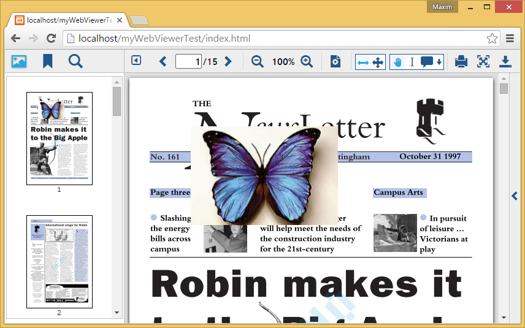

Tutorials
Using WebViewer with PDFNetJS
PDFNetJS can be used to read or modify a pdf opened in WebViewer. This tutorial will show you how to set up a basic PDFNetJS project that utilizes WebViewer. By the end of the tutorial, we will have a project that adds an image to our pdf document and which displays the changes in WebViewer.
To get started with setting up a PDFNetJS project, refer to our starting tutorial.
Step 0: Setup
This tutorial will require the following files:
- The WebViewer folder from PDFNetJS full.
- An empty HTML document.
- An empty JavaScript document.
- A PDF document of your choice. For this tutorial we will be using the newsletter pdf document.
- An image to add to the PDF document. For this tutorial we will be using an image of a butterfly.
{kind=link}
Step 1: Setting up the HTML file
Open up index.html with a text editor and copy/paste the following code into the HTML document.
<!DOCTYPE html>
<html style="height:100%;">
<head>
<meta http-equiv="Content-Type" content="text/html">
<script src="WebViewer/jquery-3.2.1.min.js"></script>
<script src="WebViewer/lib/WebViewer.min.js"></script>
<script type="text/javascript">
$(function() {
var viewerElement = document.getElementById('viewer');
var myWebViewer = new PDFTron.WebViewer({
type: "html5",
path: "WebViewer/lib",
initialDoc: "mydoc.pdf",
config: 'config.js',
documentType: "pdf",
showLocalFilePicker: true,
enableAnnotations: true,
pdfnet: true
}, viewerElement);
});
</script>
</head>
<body style="width:100%;height:100%;margin:0px;padding:0px;overflow:hidden">
<div id="viewer" style="height: 100%; overflow: hidden;">>/div>
</body>
</html>
Here we include the required jQuery and WebViewer files and start out with a single "viewer" div that we will add content to using a script. In our custom script, new PDFTron.WebViewer is called to create a new WebViewer instance that will be added as a child to our "viewer" div.
Overview of WebViewer initialization parameters:
If you open index.html in a server, you should be able to see your pdf document displayed in WebViewer.

Step 2: Setting up your JavaScript Document
Now that we have our pdf displayed, it's time to write a custom script in config.js. Open up config.js with a text editor and copy/paste the following code into the JavaScript document.
(function() {
$(document).on('documentLoaded', function() {
PDFNet.initialize().then(function(){
var doc = readerControl.docViewer.getDocument();
doc.getPDFDoc().then(function(pdfDoc){
// Ensure that we have our first page.
pdfDoc.requirePage(1){
// Run our script
runCustomViewerCode(pdfDoc).then(function(){
// Refresh the cache with the newly updated document
readerControl.docViewer.refreshAll();
// Update viewer with new document
readerControl.docViewer.updateView();
});
}
});
});
});
var runCustomViewerCode = function(doc) {
function* main() {
alert("Hello WebViewer!");
}
return PDFNet.runGeneratorWithCleanup(main());
}
})();
//# sourceURL=config.js
Note: In order to run this on browsers without ES6 support, you can convert the file to ES5 using ES6-to-ES5 transformers such as Facebook's regenerator.
If you run the project again in a server, you should be able to see "Hello WebViewer" pop up in an alert box once WebViewer has loaded. Before the custom code is run however, several checks and initializations need to be done first.
Step 3: Writing Your Custom Code
Let us change our main() code to do something more interesting:
function* main() {
doc.initSecurityHandler();
doc.lock();
// In WebViewer programs, file searching starts from the WebViewer/lib/html5 folder
var input_url = "../../../";
var firstPage = yield doc.getPage(1);
// create a new page builder that allows us to create new page elements
var builder = yield PDFNet.ElementBuilder.create();
// create a new page writer that allows us to add/change page elements
var writer = yield PDFNet.ElementWriter.create();
writer.beginOnPage(firstPage, PDFNet.ElementWriter.WriteMode.e_overlay);
// Adding a JPEG image to output file
var img = yield PDFNet.Image.createFromURL(doc, input_url + "butterfly.png");
var imgWidth = yield img.getImageWidth();
var imgHeight = yield img.getImageHeight();
var element = yield builder.createImageScaled(img, 100, 600, imgWidth, imgHeight);
writer.writePlacedElement(element);
writer.end();
}
This code sample adds the "butterfly.png" image to location (x:100, y:600) relative to the lower left corner of the document's first page. Once our custom code has finished running, two final functions readerControl.docViewer.refreshAll() and readerControl.docViewer.updateView() are called to refresh and update the WebViewer display.
The resulting viewer should look like this:

Useful links: